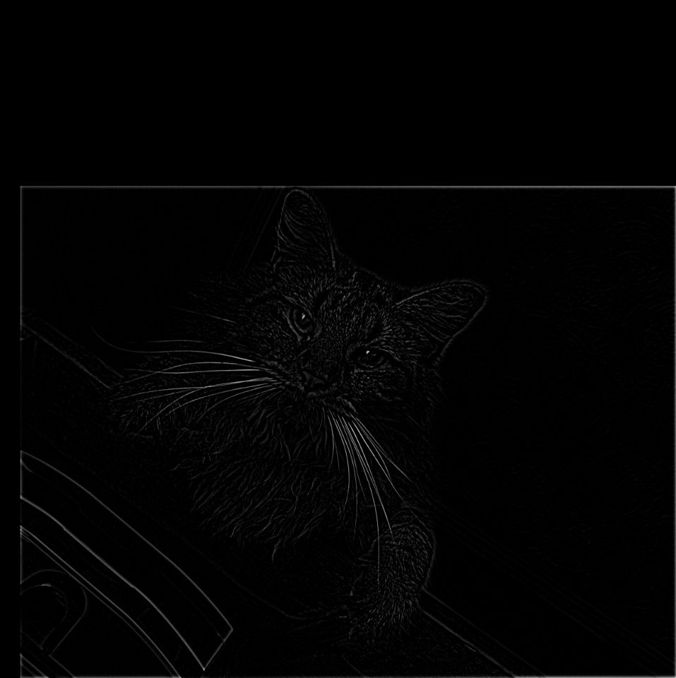
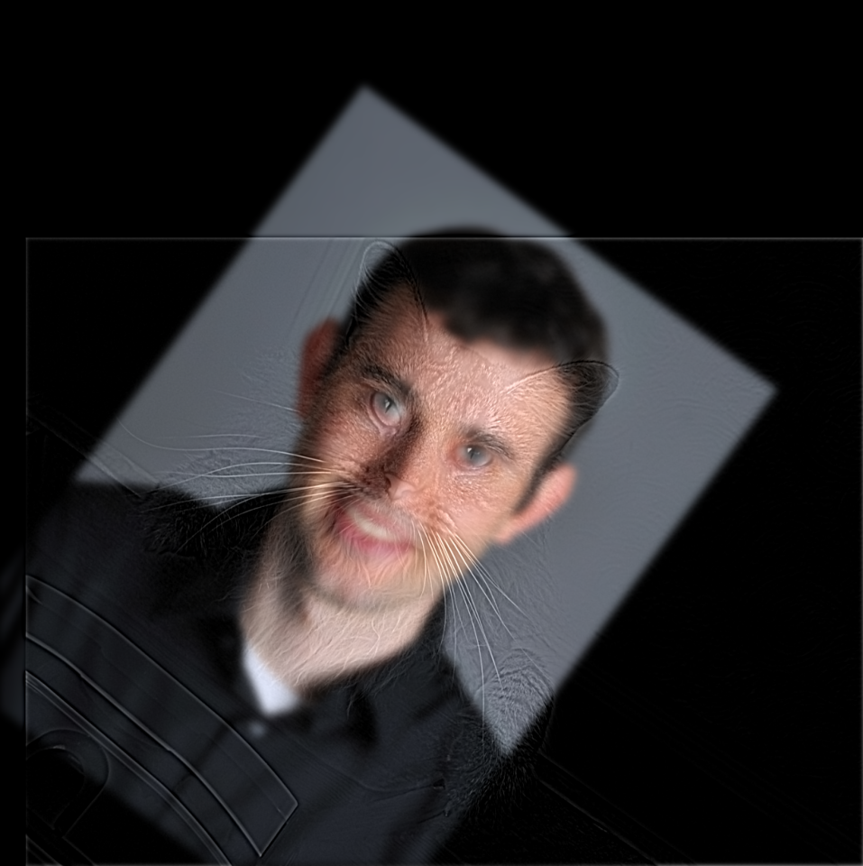

Overview
In Part 1, I implement spatial filtering from scratch and compare finite differences to derivative-of-Gaussian (DoG). In Part 2, I apply these tools to image sharpening, hybrid images, and multi-resolution blending using Gaussian/Laplacian stacks.
- Stack: Python, NumPy, SciPy, OpenCV, Matplotlib
- Topics: convolution, padding, finite differences, Gaussian/DoG, unsharp mask, FFT, Gaussian & Laplacian stacks, multiresolution blending
Part 1.1 — Convolutions from Scratch
I wrote 2D convolution using four loops (reference) and a faster two-loop vectorized version
(NumPy only). Padding is zero-filled. I validate against scipy.signal.convolve2d
and discuss boundary handling and runtime.
- Boundary: zero padding; edges darken slightly vs reflect.
- Runtime: two-loop vectorized version is ~10–30× faster than four-loop on ~1MP images.


convolve2d
Dx response (sanity check)Part 1.2 — Finite Difference Operator
Using Dx = [-1, 1] and Dy = [-1; 1],
I compute partials, gradient magnitude, and a binarized edge map. The threshold balances
keeping true edges (facial outline, tripod) while suppressing noise; chosen visually.

Ix
Iy

Part 1.3 — Gaussian & Derivative of Gaussian (DoG)
I build 2D Gaussians using cv2.getGaussianKernel and form DoG filters by
convolving the Gaussian with the finite-difference operators. I apply both
(a) Gaussian smoothing + finite differences and (b) single-pass DoG to the cameraman,
and compare to plain finite differences (less noise, sharper true edges).


Gaussian blur → finite differences (k=9, σ=1.5)


Single-pass Derivative of Gaussian (DoG)


Part 2.1 — Image “Sharpening” (Unsharp Mask)
Unsharp mask adds scaled high frequencies back: I + α(I − G∗I).
I also form a single kernel K = (1+α)δ − αG to do it in one convolution.
Below: Taj Mahal (required) and one extra image; plus an amount sweep.


Extra Evaluation — Blur & Restore
I blurred a sharp image (k=9, σ=2.0) and tried restoring it with different α values to test the unsharp mask’s ability to recover high frequencies.


Part 2.2 — Hybrid Images
Hybrids are formed by adding a low-pass version of image A to a high-pass version of image B. Below I show one pair with the full pipeline (alignment, filters, FFTs, and cutoff sweep), followed by two more pairs with inputs and final results.
Derek + Cat — full pipeline
Cutoff choice explored: σA ∈ {6, 8, 10}, σB ∈ {3, 4}.







Hybrid #2 — Vader + Anakin


Hybrid #3 — Walter + Heisenberg


Part 2.3 — Gaussian & Laplacian Stacks (Apple & Orange)
I build stacks (no downsampling): each Gaussian level is further blurred from the previous, and each Laplacian level is the band-pass difference between consecutive Gaussians. At the end I reconstruct the image by summing all Laplacian levels plus the coarsest Gaussian.
Apple — Gaussian stack


Apple — Laplacian stack


Orange — Gaussian stack


Orange — Laplacian stack


Reconstruction sanity check: the reconstructed images closely match the originals (small differences only from numeric rounding and border handling). These stacks will be used for multi-resolution blending in Part 2.4.
Part 2.4 — Multiresolution Blending (a.k.a. the oraple!)
Using the Gaussian/Laplacian stacks from Part 2.3, I blend images across frequency bands. A smooth transition is achieved by applying the same Gaussian stack to the mask, so coarse bands blend broadly and fine bands blend tightly, avoiding hard seams.
Recreating the “Oraple”


Custom Pair #1 — Batman ↔ Joker (vertical seam)


Custom Pair #2 — Lamborghinis (irregular, hand-drawn mask)
I painted a jagged mask around the blue car’s rear half. Below are (1) a simple alpha composite to visualize the mask’s silhouette and (2) the final multiresolution blend which reduces haloing by smoothing the mask per frequency band.


Notes: For hard-edged, high-contrast boundaries (like car silhouettes), the multires blend clearly outperforms a single-scale alpha composite, especially near the mask edge where ringing or halos would otherwise appear.